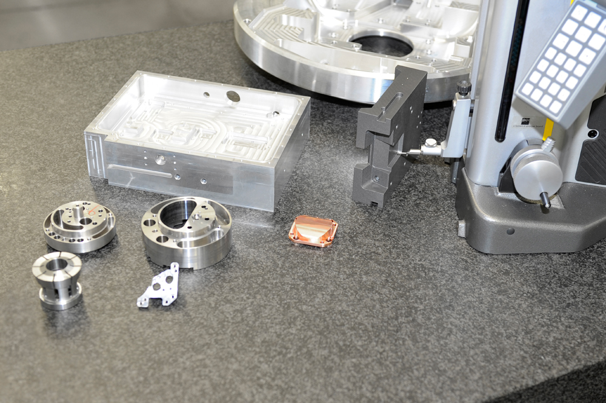

🏭
Maschinen- & Anlagenbau
Funktions- und Strukturbauteile mit engen Toleranzen für zuverlässige Anlagen.
Wo Präzision zählt, sind wir zuhause. Unsere Frästeile kommen dort zum Einsatz, wo Maßhaltigkeit und Zuverlässigkeit über die Funktion entscheiden.
Funktions- und Strukturbauteile mit engen Toleranzen für zuverlässige Anlagen.
Präzise Komponenten für Handhabungs- und Automatisierungssysteme.
Anspruchsvolle Teile mit höchsten Anforderungen an Genauigkeit und Oberfläche.
Belastbare Bauteile für dynamische Anwendungen und Prototypenbau.
Gefräste Gehäuse und Funktionsteile für robuste Systeme.
Präzise Einzelteile und Vorrichtungen – auch in kleinen Losgrößen.

Mit teilautomatisierter Fertigung sind wir besonders wirtschaftlich bei Losgrößen von 10 bis 50 Stück – dem Bereich, in dem viele unserer Kunden ihre wiederkehrenden Präzisionsteile benötigen.
Erzählen Sie uns von Ihrer Anwendung – wir finden die passende Fertigungslösung.
Kontakt aufnehmen